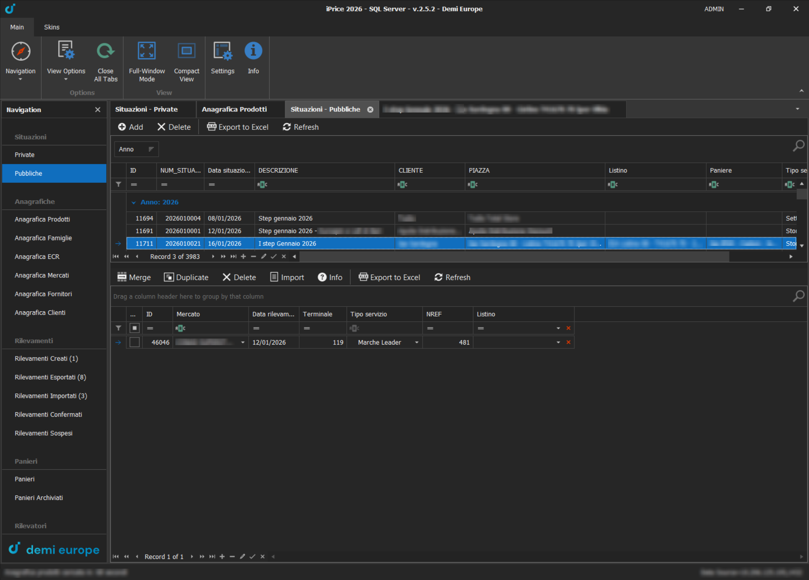
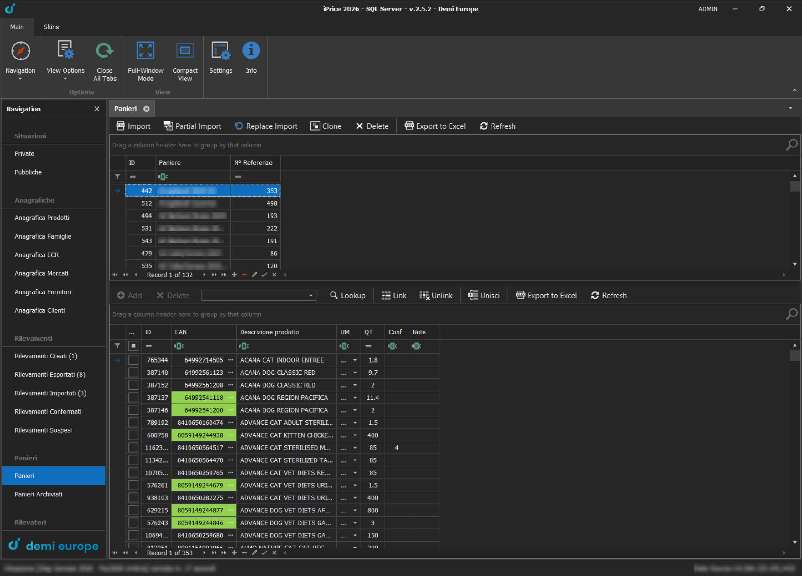
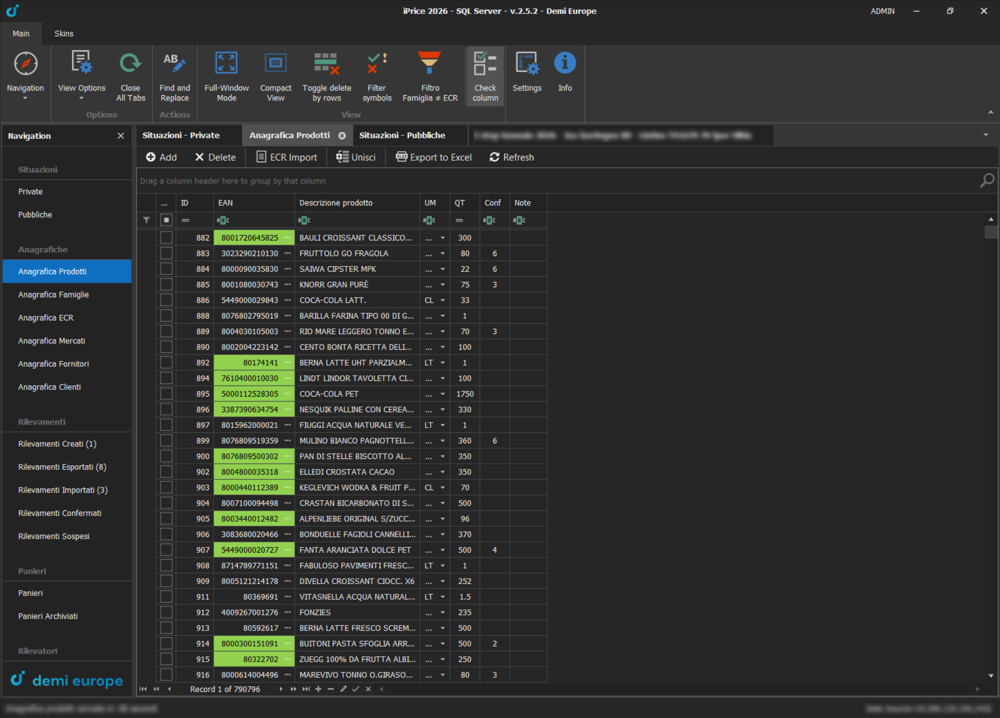
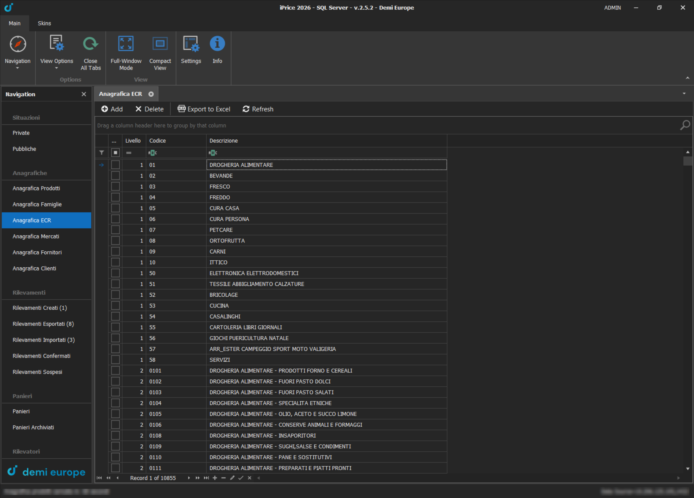
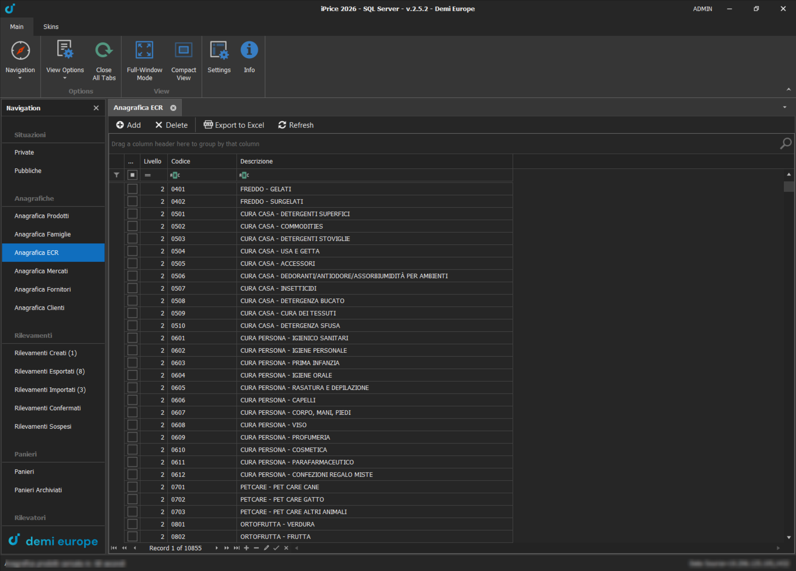

Ho progettato e sviluppato iPrice come applicazione Windows Forms su .NET Framework, costruita con i controlli DevExpress: ribbon, navigazione laterale, schede multiple e griglie con filtri, raggruppamenti ed editing in linea. I dati risiedono su SQL Server e sono letti e scritti tramite una libreria di accesso dati condivisa con il backend di WebPrice.
Situazioni e Prezzi
Una situazione raggruppa i rilevamenti fatti per un cliente in un certo periodo. L'elenco è raggruppabile per anno e mostra, sotto ogni situazione, i singoli rilevamenti con punto vendita, data, terminale e tipo di servizio. Da qui si possono unire, duplicare o importare rilevamenti.
Aprendo una situazione si arriva alla griglia prezzi: una riga per prodotto e, per ogni punto vendita, prezzo, promozione e prezzo originale. Il colore dei prezzi segnala la variazione rispetto al rilevamento precedente, i codici cliente e le descrizioni duplicate vengono evidenziati, e dal ribbon si attivano i filtri avanzati, la visualizzazione delle promozioni e delle percentuali e la generazione del file per il cliente. Una situazione resta privata finché non è controllata. Quando diventa pubblica passa in sola lettura ed è visibile su WebPrice.

Situazioni pubbliche, con i rilevamenti della situazione selezionata
Griglia prezzi: una colonna per ogni punto vendita, con indice e colori di variazione
Panieri
Il paniere è l'elenco dei prodotti che i rilevatori devono cercare sugli scaffali. Si importa dal file del cliente, anche in modo parziale o sostitutivo, e i suoi articoli vengono collegati all'anagrafica prodotti. I panieri si possono clonare per preparare la campagna successiva e archiviare quando non servono più; l'elenco articoli mostra anche il buyer di riferimento per ogni prodotto.

Panieri: elenco con numero di referenze e prodotti collegati all'anagrafica
Anagrafiche
Prodotti, famiglie, categorie ECR, mercati, fornitori e clienti hanno ognuno la propria anagrafica, tutte con la stessa griglia: filtri per colonna, raggruppamento trascinando un'intestazione, ricerca, copia e incolla tra celle ed export in Excel. L'anagrafica prodotti gestisce quasi 800.000 articoli, con i codici EAN evidenziati e la possibilità di unire i doppioni.

Anagrafica prodotti: quasi 800.000 articoli in un'unica griglia
Classificazione ECR
ECR è la classificazione standard dei prodotti della grande distribuzione: un albero a cinque livelli, dal reparto (per esempio Cura casa) fino al segmento più fine (Bucato a mano – Liquido), con oltre 10.000 voci. Ogni livello aggiunge due cifre al codice, quindi dal codice di una categoria si ricava tutto il suo percorso. Portare l'intero catalogo prodotti su questa classificazione, e tenerla allineata nel tempo, è stato uno dei lavori più corposi del progetto.
- Anagrafica ECR: ogni voce mostra livello, codice e percorso completo. Per crearne una nuova basta scrivere il codice: l'applicazione trova da sola la categoria madre, compone la descrizione completa mentre si digita e blocca i codici già esistenti
- Import massivo: un file con EAN e codice ECR assegna la categoria a migliaia di prodotti in una volta. Le righe che non si possono abbinare finiscono in un file a parte, da correggere e reimportare
- Cinque livelli in griglia: nelle griglie prodotti e prezzi ogni livello ECR ha la sua colonna, filtrabile e modificabile con un menu a tendina. Dal ribbon si sceglie quali livelli mostrare e la scelta resta salvata
- Controllo di coerenza: il filtro Famiglia ≠ ECR mostra solo i prodotti la cui famiglia interna non corrisponde alla categoria ECR, o che non hanno nessuna delle due, così le incongruenze si trovano e si correggono subito
Lo stesso albero alimenta WebPrice, dove ogni cliente analizza gli indici di prezzo per categoria ECR e ogni utente vede solo le categorie di sua competenza.

Primo livello ECR: i reparti, dalla drogheria alimentare al bricolage e ai servizi

Secondo livello: ogni reparto si divide in categorie e il codice cresce di due cifre
Rilevamenti e Controllo Qualità
Ogni rilevamento attraversa una sequenza di stati: creato, esportato verso il terminale del rilevatore, importato con i prezzi raccolti, e infine confermato o sospeso. La sezione di manutenzione del database, riservata agli amministratori, cerca le anomalie che sfuggono al controllo manuale: prezzi in promozione più alti del prezzo pieno, promozioni senza codice, prezzi fuori scala rispetto allo storico. Le correzioni si fanno direttamente nella griglia, anche su tutte le righe segnalate in una volta.
Tecnologie Utilizzate